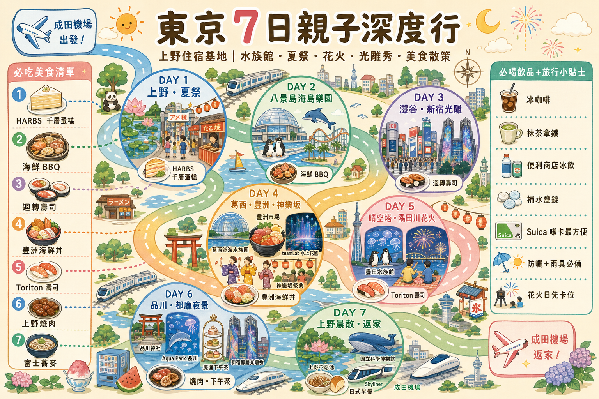
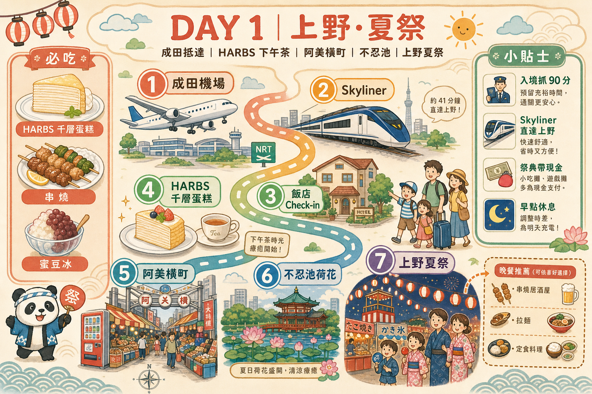
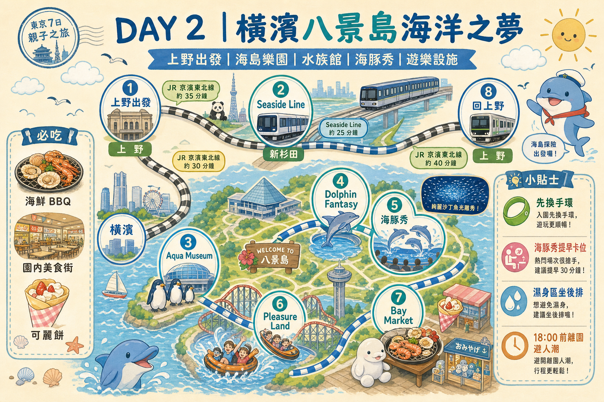
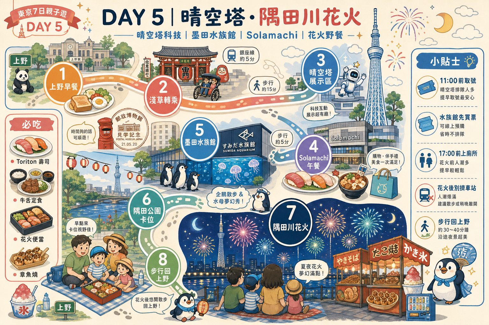
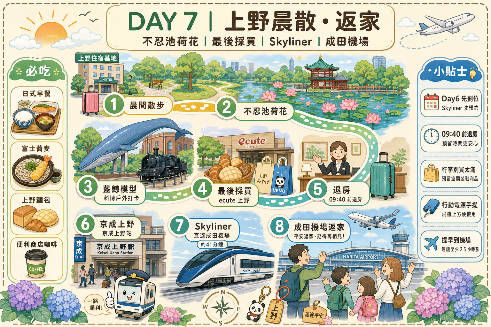

🔍 0. 出發當天速覽（Day1–Day7 懶人表）
外出只要看這一節就好；遇到疑問再往下翻各日詳細說明。
Day1｜抵達東京・上野下午茶・夏日祭
Day2｜橫濱八景島海洋之夢📍地圖
- 07:30 上野站早餐外帶（Andersen / 松屋📍地圖）。
- 10:00–15:30 八景島水族館：10:00 入館直奔大水槽（沙丁魚秀開始前 10–15 分卡位）→ 午餐 12:00 前入座 → Animal Life Live 開始前 20–30 分進 4F 找位（常見鎖定中午後第一回）。
- 午餐：島上海鮮 BBQ 或美食街，12:00 前入座，暑假 12:30 後會大排隊。
- 備案 B：16:00 離園 → 17:15 秋葉原 ACG 半日 → 20:45 起秋葉原日式晚餐（8 選 1，見 Day2「秋葉原晚餐點餐攻略」）。
Day3｜上野知性＋澀谷夜景＋平日寶可夢光雕秀
Day5｜晴空塔📍地圖・墨田水族館📍地圖＋隅田川花火📍地圖
- 上午：銀座線淺草📍地圖 → 東武晴空塔📍地圖站，逛晴空塔📍地圖 8F 科工展＋9F 郵政博物館。
- 11:00 前 到 Solamachi📍地圖 取號／排午餐（トリトン📍地圖 或 利久牛舌📍地圖）。
- 13:30–16:00 墨田水族館📍地圖（7/25 週六：開館 9:00–21:00；最終入場 20:00）。必看：13:30–13:40 企鵝ゴハン、16:00–16:10 第 3 回。
- 16:10–17:30 買好花火野餐（商場超市 / 便利商店）＋步行至隅田公園📍地圖〜言問橋📍地圖，17:00 前人已在場就坐（詳見 Day5「花火觀賞攻略」）。
- 19:00–20:30 花火大會（第一會場 19:00、第二會場 19:30）。
- 花火後：步行 40–60 分回上野，不要擠車站；小孩中途想上廁所會很難排。
Day6｜品川 Aqua Park📍地圖 雙秀＋週末寶可夢光雕秀
- 上午：上野 → 品川 → 品川神社📍地圖＋舊東海道短散步。
- 10:30 到 Atre 品川📍地圖排 利久牛舌📍地圖，11:00 入座；排太久就改味街道或站內輕食。
- 12:15–14:30 Aqua Park📍地圖 日間館內＋日間海豚秀（Splash 開始時間以官網 event schedule 為準；建議 13:30 前就座）。
- 15:00–17:00 出館逛 Atre / ecute（冷氣＋補貨＋咖啡），17:30 前再入園 晚間秀。
- 18:00–19:30 夜間雷射海豚秀（約 15 分；17:30 前入場就座；開始時間以官網 event schedule 為準）→ 20:30 / 21:00 新宿都廳📍地圖光雕秀（出發前上官網對照寶可夢場次）。
- 回上野後：簡單宵夜＋順手劃好 Day7 Skyliner。
① 行前必讀：入境・海關・必辦
🛂 入境日本：Visit Japan Web（強烈建議出發前完成）
2026 年日本入境主要走 Visit Japan Web（VJW）線上預先登錄，現場掃 QR 走電子通關最快。
- 網址：vjw.digital.go.jp（出發前 1～2 週註冊帳號、填好）
- 需登錄：入境審查（外國人入境記錄） + 海關申報（攜帶品申報）。完成後各產生一個 QR Code。
- 需準備：護照、班機資訊、在日住宿地址電話（填上野飯店 Hotel Crown Hills Ueno Premier📍地圖 地址即可）。
- 現場：先掃「入境審查」QR + 拍照按指紋 → 領行李 → 過海關掃「海關申報」QR。
- 備援：若 VJW 當機，仍可填寫紙本「入境卡 + 海關申報單」（機上空服員會發，建議拿一份備用）。
※ 一家人可在同一帳號下建立多位同行家屬資料，小孩也要各自登錄。
🧳 海關・行李・違禁品重點
- 免稅菸酒/購物額度：酒 3 瓶、紙菸 200 支（合理個人用量內免稅）。一般家庭購物不會超標。
- 嚴禁攜入：新鮮肉品/肉製品（含真空包裝肉鬆、含肉泡麵調理包風險）、新鮮蔬果、部分種子。台灣肉乾/貢丸/含肉零食不要帶。
- 藥品：個人用成藥沒問題；處方藥多帶（>1 個月量）需「薬監証明」，一般旅遊用量免。
- 現金申報：攜帶等值 ¥100 萬以上現金需申報。
- 回台：日本買的水果、生鮮肉品同樣不能帶回台灣；藥妝/食品/電器 OK。台灣入境免稅額 NT$2 萬、菸酒有限量。
📶 上網 / 網路（出發前先買）
- 最省心：eSIM（如 Airalo / Ubigi / 各大電信日本上網 eSIM），落地自動連線，免換卡。iPhone XS 以後皆支援。
- 多人共用：一台 WiFi 分享器（Klook/KKday 機場領取或宅配台灣）給全家共用最划算。
- 建議流量：每人 7 天 5–10GB；重度導航/影片選吃到飽。
- 機場有免費 Wi-Fi 但不穩，不要靠它過 VJW 通關。
💴 現金・支付・匯兌
- 東京八成場所可刷卡/嗶手機，但祭典屋台、阿美橫町📍地圖小攤、部分老店只收現金，務必帶足現金（建議每人備 ¥2–3 萬零用 + 全家共同基金）。
- 換匯：台灣端先換好日幣較佳；不足時用日本 7-11 ATM / 郵局 ATM 領現（海外提款手續費 + 設好磁條/晶片提款功能）。
- 支付主力：iPhone 綁定 Suica（見下節），搭車購物嗶一下最快。
- Visa/Master 信用卡保留一張（樂園、水族館、飯店押金用）。
⚠️ 原行程「不足/要補」的重點檢查（我幫你抓出來）
- Day3 澀谷 SKY📍地圖 必須提前 28 天搶日落黃金場（16:30–17:00），否則只剩白天或很晚的場（見訂位清單）。
- Day4 / Day5 都用到 teamLab📍地圖 Planets → 你只會去一次，請二選一（建議放 Day4，因 Day4 動線豐洲市場📍地圖→teamLab📍地圖 最順）。Day5 行程本身沒排 teamLab📍地圖，OK，但別重複買票。
- Day5 隅田川花火📍地圖（7/25 六）= 全東京最擠的一天：晴空塔📍地圖商場、淺草📍地圖押上站📍地圖會交通管制。務必照原行程「步行回上野」，且 17:00 後少喝水、先上廁所、先卡好野餐位。雨天備案見緊急章節（花火遇荒天當天上午 8 點才宣布是否中止）。
- Day2 八景島是私鐵（金澤海岸線 Seaside Line），Suica 可刷；One Day Pass 現場/官網買。確認當日海豚秀時間再排。
- 豐洲市場📍地圖壽司大/大和壽司清晨開賣、中午多半已收：你 Day4 中午到，壽司大未必還營業，請以「海鮮丼/定食」店為主力（已在 Day4 補 3 備案）。
- Day1 HARBS：不收訂位，抵達日 14:30 前到較穩；週二 PARCO_ya📍地圖 若休館改②③。
- Day2 八景島午餐：暑假 11:50 前入座，12:30 後 BBQ 常大排。
- Day3 邁泉炸豬排📍地圖青山本店：熱門店要嘛 TableCheck 提前 1–2 週訂位，要嘛 11:00–11:30 前到排隊。
- Day5 トリトン📍地圖 Solamachi📍地圖：花火週六 11:00 前取號最關鍵，否則等 1hr+。
- Day6 利久牛舌📍地圖品川：10:30 到站排隊，11:00 入座最理想；週日 12:00 後常等 30 分+。
- 7 月底東京 33–36°C + 高濕：每段戶外行程都要排「室內冷氣避暑點」，手持風扇、涼感巾、補水鹽錠必備（打包章節）。
- Skyliner 回程（Day7）建議 Day6 晚上先在京成上野站📍地圖劃位買好（原行程已提，讚）。
- 小孩入居酒屋：鳥貴族/大山📍地圖/大統領📍地圖晚間菸味/酒客多，帶小孩建議坐早場或選定食店。
② 交通票券分析（含 vs 單次購票試算）
理由：你全程在東京 23 區 + 橫濱/八景島來回，沒有跨城長途；而且每天都混用 JR + 東京地鐵 + 都營 + 私鐵（京成/東武/金澤海岸線），任何單一公司的 Pass 都無法覆蓋，硬買反而被綁死又更貴。
各票券比較表（價格・範圍・是否推薦）
| 票券 | 價格 | 使用範圍 | 本行程推薦? |
|---|---|---|---|
| Suica / PASMO（實體或 iPhone 綁定） | 儲值制，無票價；iPhone 綁定免押金，實體卡 ¥500 押金 | JR、地鐵、都營、私鐵、巴士、便利商店、自販機通通能嗶 | ✅ 主力，全程用它 |
| Welcome Suica（觀光客版） | 免押金、效期 28 天 | 同 Suica | ○ 沒 iPhone 綁卡時的實體替代 |
| 京成 Skyliner 來回票 | 來回約 ¥4,480（單程 ¥2,580；常有 Klook/KKday 折扣 ~¥4,300） | 京成上野 ⇄ 成田機場 直達 41 分 | ✅ 單獨買來回，最省機場往返時間 |
| JR Pass 全國版 | 7 日約 ¥50,000 | 全日本 JR | ❌ 沒跨城，完全浪費 |
| JR 東京都市地區通票（都區內 Pass） | ¥760/日 | 東京 23 區內 JR 普通車一日無限 | △ 只有 Day2/Day6 大量純 JR 移動的日子「可能」打平，但你還要搭地鐵/私鐵，不划算（見下試算） |
| Tokyo Subway Ticket（24/48/72h） | ¥800 / ¥1,200 / ¥1,500 | 只含東京 Metro + 都營地鐵，不含 JR、不含私鐵 | △ 你 JR 用很兇，覆蓋不足；除非某天幾乎只搭地鐵（見 Day3 備案A/B） |
※ Skyliner 也可考慮「Skyliner + Tokyo Subway 24h 套票」，但你只有 Day3 偏地鐵，整體仍是 Suica 單嗶最彈性。
🧮 票券 vs 單次購票 試算（為什麼選 Suica）
各日地鐵/JR 嗶卡實際花費（估，IC 票價，單位日圓/人）：
- Day1：Skyliner 單程 2,580（來回票攤一半）+ 市區步行為主 → 當日約 ¥2,580
- Day2：上野⇄八景島來回 + Seaside Line ≈ ¥1,800–2,000
- Day3：上野⇄澀谷⇄新宿（光雕秀）⇄上野，混 JR/地鐵 ≈ ¥600–800
- Day4：上野→葛西臨海→豐洲→飯田橋（神樂坂📍地圖）→上野 ≈ ¥900–1,100
- Day5：上野⇄晴空塔📍地圖（東武）+ 步行 ≈ ¥600
- Day6：上野⇄品川⇄新宿（光雕秀）⇄上野 ≈ ¥900–1,100
- Day7：Skyliner 單程 2,580（來回票另一半）→ 約 ¥2,580
👉 若改買 Subway Ticket 72h（¥1,500），你 Day2/Day4/Day6 的 JR 段全不能用，仍要另付 JR，等於「白花 ¥1,500」。Suica 嗶卡 = 花多少算多少，最省。
7 日交通總計（含 Skyliner 來回）≈ ¥10,000–11,500 / 人（約 NT$2,100–2,400）
📲 iPhone 綁定 Suica 步驟（出發前先設好）
- iPhone「錢包 App」→ 右上「＋」→ 選「交通卡」→ Suica。
- 用 Apple Pay（綁 Visa/Master）儲值，例如先充 ¥3,000。
- 過閘門時整支手機靠感應區即可（快捷交通卡開啟後免解鎖、免開 App）。
- 沒電也能嗶（iPhone XS 以上有電力儲備感應）。家裡每人一支手機各綁一張。
- 沒 iPhone 的家人：機場/車站買實體 Welcome Suica。
③ 訂位 / 預約 / 報名清單（按急迫度排序）
🔴 必須提前搶（行程確定立刻訂）
| 項目 | 提前多久 | 怎麼訂 | 備註 |
|---|---|---|---|
| 澀谷 SKY📍地圖（Day3） | 參觀日 28 天前日本時間 00:00 開賣 | 官網 / Klook / KKday | 想要日落+夜景 16:30–17:00 場，開賣秒殺，定鬧鐘搶 |
| teamLab📍地圖 Planets 豐洲（Day4，二選一） | 至少 1 個月 | 官網 指定時段電子票 | 涉水體驗，穿短褲/可捲褲管；旺季易售完 |
| 墨田水族館📍地圖（Day5） | 1–2 週，至少前一晚 | 官網 / Klook 掃 QR 入場 | 花火日人潮爆，先買省排隊 |
| 八景島 One Day Pass（Day2） | 建議前一晚線上 | 官網 / KKday | 確認當日海豚秀場次再排 |
🟡 建議先預約的餐廳（熱門/家庭優雅）
| 餐廳 | 哪天 | 訂位方式 | 最熱門時段 |
|---|---|---|---|
| 迴轉壽司 トリトン📍地圖 Solamachi📍地圖 | Day5 午餐 | 不訂位；11:00 前到取號（花火週六必守） | 12:00–13:30 |
| 邁泉炸豬排📍地圖 青山本店（まい泉） | Day3 備案C 午餐 | 官網 / TableCheck，提前 1–2 週；否則 11:00 前到排隊 | 12:00–13:30 |
| 味街道 五十三次📍地圖（品川王子） | Day6 午餐備案② | Hot Pepper / 一休；怕利久排隊時改訂 | 11:30–13:00 |
| 神樂坂📍地圖 鳥茶屋 | Day4 晚餐 | 電話 / Tabelog 網路訂位；阿波舞祭當晚務必訂 | 17:30–19:00 |
| 敘敘苑 / 燒肉陽山道 上野 | Day2 備案B 晚餐（犒賞） | Hot Pepper / 一休 | 18:00–20:00 |
| 高輪格蘭王子 Lounge Momiji📍地圖 | Day6 備案 C | 官網 / 一休 | 14:00–16:00 |
| T.Y.HARBOR📍地圖（天王洲） | Day6 午餐備案④ | 官網 / TableCheck | 午餐 12:00 |
| 迴轉壽司 壽司郎📍地圖 / 魚べい📍地圖（澀谷） | Day3 晚餐 | 官方 App 抽號（17:30 抽）；現場排常 >1hr | 18:00–20:00 |
🟢 現場即可（不收訂位 / 排隊制）
- Day1：HARBS、みはし、鳥貴族、山家炸豬排、天丼てんや — 現場排；HARBS 14:30 前到。
- Day2：Andersen、松屋📍地圖、八景島 BBQ（11:50 前入座）、拉麵街📍地圖、大統領📍地圖、蓬莱屋📍地圖、焼肉ライク📍地圖。
- Day3：Park Side Cafe📍地圖（11:30 前）、千客萬来、博多風龍、思い出橫丁📍地圖。
- Day4：仲家📍地圖海鮮丼、天房📍地圖、八千代📍地圖、手打蕎麥、富士そば📍地圖 24h。
- Day5：Doutor、コメダ、Solamachi📍地圖 美食街、超市野餐、屋台。
- Day6：利久牛舌📍地圖（10:30 排隊）、ecute 輕食、大山📍地圖/大統領📍地圖、松屋📍地圖宵夜。
- Day7：Andersen、富士そば📍地圖 24h、便利商店。
共通策略：熱門午餐 開店前 15–30 分鐘到；晚餐 18:00 前入座較穩；帶小孩優先選連鎖定食/迴轉壽司/牛丼，翻桌快、不需訂位。
④ 🟡 寶可夢光雕秀 ×2（已幫你插入 Day3 平日 + Day6 週末）
📍 東京都廳第一本廳舍📍地圖 東側壁面 ／ 觀賞點：都民廣場📍地圖（新宿區西新宿 2-8-1）
💴 完全免費、免預約，原則上每天上映（荒天中止）
🕖 7 月夏季場次：19:30 / 20:00 / 20:30 / 21:00 / 21:30（每場約 15 分，最後約 21:45 結束）
🚇 最近站：都營大江戶線「都廳前站📍地圖」直結；或 JR「新宿站📍地圖」西口走 ~10 分
🔗 當日 TIMETABLE / 即時音樂：tokyoprojectionmappingproject.jp
Day 1｜7/21(二) 抵達・上野下午茶・夏日祭典

🕒 時間表 + 交通路線
12:25 成田機場 T1/T2📍地圖 抵達，入境、領行李、過海關（VJW 掃碼）。
↳ 抓 90–120 分鐘緩衝：暑假人潮 + 領李 + 買 Skyliner 票，14:00–14:30 上車較合理。
~14:10–14:30 京成 Skyliner：成田機場站📍地圖 → 京成上野站📍地圖，直達不轉車 41 分，¥2,580（建議買來回 ¥4,480）。
↳ Skyliner 對號座，行李架夠大。
15:00–15:20 京成上野站📍地圖步行 5–8 分 → 飯店 Check-in / 寄行李。
15:30–16:15 下午茶（HARBS 若還排得進就吃；若已晚或太多人，直接改 みはし/otto e sette）。
16:30–17:30 阿美橫町📍地圖逛街（步行 5 分）。
18:00 上野恩賜公園📍地圖 & 不忍池📍地圖散步（賞夏季蓮花）。
18:45 晚餐（見下）。
19:30 うえの夏まつり📍地圖（不忍池📍地圖周邊「上野之縁日」15:00–21:00；水上音楽堂每日演目依當日公告）。
21:00 步行回飯店。
🍽️ 三餐 ×3 備案
本日風格：甜點下午茶 ＋ 居酒屋/炸物晚餐（與其他天不重複）。
下午茶（15:00）
① HARBS 上野店📍地圖（ハーブス）PARCO_ya📍地圖 2F — 水果千層 Mille Crepes + 熱紅茶，¥1,500–2,000。不收訂位；若當天 15:30 前已到上野且排隊不長再選它，否則直接改 ②③ 更穩，每人低消一杯飲品。Maps：HARBS PARCO_ya 上野。
② みはし 上野本店📍地圖（あんみつ蜜豆冰）— 在地老店、夏天消暑，¥800–1,200，現場候位、不訂位。Maps：みはし 上野。
③ 廚 otto e sette📍地圖（義式甜點，少觀光客）— 蛋糕精緻，¥1,200–1,800，不訂位，平日午後較空。
晚餐（18:45）
① 鳥貴族 上野店📍地圖（均一價串燒居酒屋）— ¥1,500–2,000，現場候位、不訂位；帶小孩建議 18:00 前入座靠角落。
② とんかつ 山家📍地圖（やまべ）御徒町📍地圖（在地炸豬排）— 份量大 CP 高，¥1,000–1,500，不訂位，17:30 後開始排隊。Maps：とんかつ山家 御徒町。
③ 天丼てんや 上野店📍地圖（天婦羅丼連鎖）— 出餐快、小孩友善，¥800–1,200，不訂位，夏祭當晚不想排隊時最穩。
④ 屋台小吃（上野夏祭）— 炒麵/章魚燒/蘋果糖，¥1,500 內吃飽，記得帶現金；若排餐廳太久可直接改這個。
💴 Day1 預算（/人）
Day 2｜7/22(三) 橫濱八景島海洋之夢📍地圖（雙備案傍晚）

⏰ 營業時間與設施維修注意事項
- 全島開放時間：08:30 – 21:30（入島免費）
- 水族館區 (Aqua Resorts)：10:00 – 20:00（官網記載時刻=最終入館；閉館時間約再 +30 分鐘，實際以當日公告為準）
- 遊樂設施 (Pleasure Land)：11:00 – 20:00
- ⚠️ 維修與停駛注意：
- 遊樂設施（如波浪雲霄飛車、急流泛舟）若遇強風、大雨或雷雨會隨時暫停營運。
- 各設施的「定期保養點檢日」通常會在前一個月於官網公佈。強烈建議出發前下載「八景島官方 APP」，APP 內不僅有即時 GPS 園區地圖與 AR 導航，還能看到當天所有設施的即時排隊等待時間與維修停開狀況。
🎭 館內表演時間・地點・提前多久到場（Day2 必看）
⚠️ 八景島表演場次每日不同、平日／假日也不同，官網寫「順次公開」。7/22(三) 的精確 startAt 請在前一晚與當天早上各查一次：イベントスケジュール（時間別） 或官方 APP「本日のスケジュール」。下表「鎖定策略」是依官網固定資訊＋暑假常見節奏，方便你對行程；以當日官網時間為準。
| 表演 | 地點 | 時長 | 提前多久到場 | 本行程鎖定策略（7/22） |
|---|---|---|---|---|
| スーパーイワシイリュージョン ～輝く群れの奇跡～ （7/18 起新版） |
Aqua Museum 1F LABO5 大水槽 （3F 也可俯瞰） |
約 5 分 | 開始前 10–15 分到大水槽前站定；暑假第一回也建議開館就過去 | 鎖定開館後第一回（多落在 10:00–10:45）。10:00 入館後直奔 1F 大水槽，看完再逛北極熊／海象。 |
| Animal Life Live! （デイ ver.） 主秀・必看 |
Aqua Museum 4F ライブスタジアム |
約 25 分 | 開始前 20–30 分進場找位（暑假）；前三排＝濕身區，帶小孩坐第 4 排以後 | 鎖定中午後第一回（常見約 13:00／13:30）。策略：12:00 前吃完午餐 → 12:40–13:00 進 4F。若當日第一回是 12:00，改吃輕食後直接進場。 |
| アニマルパフォーマンス | Fureai Lagoon フレンドリーサークル |
約 25 分 | 開始前 10–15 分到場 | 看完 Animal Life Live 後順路過去。若當日有 14:00–15:30 場就卡；沒有就自由參觀企鵝／海豚區。 |
| ケープペンギンのパレード | Fureai Lagoon | 約 10 分 | 開始前 5–10 分 | 有就看、沒有不勉強；當日時間表有再插入即可。 |
📌 表演插入時間軸（兩備案共用）
- 09:45–10:00 換票／入館（售票處或自動取票機，QR → 手環約 10–15 分）。
- 10:00 入館 → 直奔 Aqua Museum 1F 大水槽，卡沙丁魚秀（開始前 10–15 分到位）。
- 10:30–11:30 看完沙丁魚後順動線逛 Aqua Museum（北極熊、海象等）。
- 11:30–12:00 Dolphin Fantasy（拱型水槽，走動參觀，不需卡位）。
- 12:00–12:40 午餐（YAKIYA 或美食街；務必 12:00 前入座，12:30 後大排）。
- 12:40–13:00 上樓 4F ライブスタジアム找位（Animal Life Live 開始前 20–30 分）。
- 13:00–13:45 Animal Life Live（約 25 分；實際開始時間以當日表為準）。
- 14:00–15:30 Fureai Lagoon（企鵝／近距離海豚；若有アニマルパフォーマンス就卡）。
查表口訣：前一晚打開官網時間別表 → 在紙上／手機備忘錄寫下「沙丁魚第一回 __:__」「Animal Life Live 中午後第一回 __:__」→ 當天早上再確認一次有無異動。APP 也可看即時排隊與停開。
票券：以上表演皆需「アクアリゾーツ（水族館 4 施設）」可入場票種。官網表演頁：沙丁魚秀／Animal Life Live。
🗺️ 備案 A：完整版（水族館＋遊樂設施）詳細攻略表
| 時間 | 推薦行程與設施 | 攻略與排隊注意事項 |
|---|---|---|
| 08:30 - 10:00 | 【交通與入園】 上野出發 → 八景島站📍地圖 | 搭乘 Seaside Line 抵達。入島後先去售票處或自動取票機，將 Klook/KKday 買好的 QR Code 換成「一日通票手環」。(預估排隊：10-15分)。目標 09:45–10:00 完成換票。 |
| 10:00 - 11:30 | 【Aqua Museum】 沙丁魚秀＋館內 | 10:00 入館直奔 1F LABO5 大水槽。スーパーイワシイリュージョン（約 5 分）鎖定開館後第一回；開始前 10–15 分卡位。看完順動線看北極熊與海象。 |
| 11:30 - 12:00 | 【海豚夢幻館 Dolphin Fantasy】 海底隧道拍美照 | 無屋頂的拱型水槽，陽光灑下非常夢幻。採走動式參觀，不需排隊，但等空景拍照約需 5-10 分鐘。 |
| 12:00 - 12:40 | 【午餐】Seafood & Grill YAKIYA📍地圖 海鮮 BBQ 吃到飽 | ⚠️ 關鍵戰略：暑假 12:30 後餐廳會大排長龍，務必在 12:00 前入座、12:40 前離席趕 4F 表演。趕時間改旁邊美食廣場拉麵／丼飯。 |
| 12:40 - 13:45 | 【Animal Life Live!】 Aqua Museum 4F ライブスタジアム | ⭐ 全天最重要卡位：鎖定中午後第一回（常見 13:00／13:30，以當日表為準）。開始前 20–30 分進場；前三排濕身區，帶小孩坐第 4 排以後。約 25 分。 |
| 14:00 - 15:30 | 【海洋親密館 Fureai Lagoon】 近距離看企鵝、摸海豚 | 入場需聽 5 分鐘規則解說。若當日有アニマルパフォーマンス（約 25 分），開始前 10–15 分到フレンドリーサークル。水獺握手／摸小白鯨需當天一早 AsoView 搶預約。 |
| 15:30 - 18:00 | 【遊樂島 Pleasure Land】 玩戶外遊樂設施 | 下午稍涼適合玩戶外： 1. 波浪雲霄飛車 (衝出海面，排隊約 40 分) 2. 急流泛舟 (夏天必玩微濕，排隊約 40 分) 3. 海島觀覽塔 (吹冷氣看夕陽，排隊約 15 分) |
| 18:00 - 19:00 | 【晚餐與伴手禮】 海灣市場 Bay Market📍地圖 | 玩完設施後，到 Bay Market📍地圖 買白鯨娃娃伴手禮，吃個可麗餅或簡單晚餐。 |
| 19:00 ~ | 【賦歸】 八景島 → 上野 | 避開閉園大散場人潮，提早搭車回上野飯店休息。 |
🐬 備案 B：水族館專攻 ＋ 秋葉原📍地圖半日 ACG 導覽（16:00 離園）
| 時間 | 推薦行程與設施 | 攻略與排隊注意事項 |
|---|---|---|
| 07:30 | 【早餐外帶】 上野 ecute / Andersen | 車上吃，不必 08:30 就衝島；水族館 10:00 才開。 |
| 08:00 - 09:30 | 【交通與入園】 上野 → 八景島站📍地圖 | JR 上野 → 橫濱 → 新杉田站📍地圖 → Seaside Line，約 75–90 分。換票排隊約 10–15 分。目標 09:45–10:00 完成換票。 |
| 10:00 - 11:30 | 【Aqua Museum】 沙丁魚秀＋館內 | 10:00 入館直奔 1F LABO5 大水槽。沙丁魚秀約 5 分，鎖定開館後第一回；開始前 10–15 分卡位。之後順動線看北極熊、海象。 |
| 11:30 - 12:00 | 【Dolphin Fantasy】 海底隧道 | 拱型露天水槽，走動參觀不需排隊；等空景拍照約 5–10 分。 |
| 12:00 - 12:40 | 【午餐】 海鮮 BBQ 或美食街 | 12:00 前入座、12:40 前離席（12:30 後 BBQ 常大排）。趕表演改美食街拉麵／丼飯最快。 |
| 12:40 - 13:45 | 【Animal Life Live!】 4F ライブスタジアム | ⭐ 全天最重要卡位：鎖定中午後第一回（常見 13:00／13:30，以當日表為準）。開始前 20–30 分進場；前三排濕身區，帶小孩坐第 4 排以後。約 25 分。 |
| 14:00 - 15:30 | 【Fureai Lagoon】 企鵝、近距離海豚 | 入場先聽 5 分鐘規則。若有アニマルパフォーマンス，開始前 10–15 分到場。水獺握手／摸小白鯨需當天一早 AsoView 搶預約。 |
| 15:30 - 16:00 | 【二刷 / 伴手禮】 Bay Market📍地圖 | 回 Aqua Museum 再看喜歡展區，或 Bay Market📍地圖 買白鯨娃娃、可麗餅。16:00 準時離園，別拖。 |
| 16:00 - 17:15 | 【賦歸】 八景島 → 秋葉原 | Seaside Line → 新杉田 → JR 上野（約 60–75 分）→ 山手線 1 站到秋葉原（約 3 分）。大件行李可先在飯店寄放或直拖（秋葉原站📍地圖有置物櫃）。 |
| 17:15 - 18:45 | 【K-BOOKS📍地圖】 秋葉原本館 ＋ MEN'S館 | ⭐ 半日核心。本館＝中古漫畫・同人誌・小說；MEN'S館＝男性向 ACG／遊戲周邊。各逛 45–60 分。Maps：K-BOOKS📍地圖 秋葉原本館。多數 12:00–20:00（官網）。 |
| 18:45 - 19:30 | 【ラジオ会館📍地圖】 Radio Kaikan 1–3F | 扭蛋、模型、卡牌、小周邊；小孩通常最開心。步行 3–5 分。多數店 11:00–20:00，優先逛。 |
| 19:30 - 20:15 | 【ヨドバシ or ガシャポン】 二選一 | ヨドバシカメラ マルチメディア Akiba📍地圖（玩具／遊戲試玩，常至 22:00）或 ガシャポンのデパート📍地圖（整面扭蛋牆）。大件電器注意電壓／行李。 |
| 20:15 - 20:45 | 【アニメイト or まんだらけ】 快閃二選一 | アニメイト秋葉原📍地圖（旗艦，新番周邊）或 まんだらけ 複合店📍地圖（中古收藏）。時間不夠就跳過，回上野晚餐。 |
| 20:45 ~ | 【晚餐】 秋葉原就地（日式 8 選 1） | 依位置：アキバ・トリム📍地圖＝トラジ／築地すし好；ヨドバシ 8F＝まぐろ人📍地圖／但馬屋📍地圖；駅直結＝えん；電氣街＝すし土風炉／ウメ子の家。L.O. 多 22:30；築地すし好 L.O. 21:30 最趕。點餐細節見下「秋葉原晚餐點餐攻略」。 |
動線：上野 → 八景島（沙丁魚第一回 → Dolphin Fantasy → 午餐 → Animal Life Live → Fureai Lagoon → Bay Market📍地圖）→ 16:00 離園 → 秋葉原（K-BOOKS📍地圖 → ラジオ会館📍地圖 → ヨドバシ／扭蛋 → アニメイト or まんだらけ）→ 秋葉原就地日式晚餐（8 選 1）→ 回上野
票券：確定不玩遊樂設施可改買水族館區單獨票（出發前查 官網），通常比 One Day Pass 省 ¥1,000+。
時間壓力提醒：K-BOOKS📍地圖／ラジオ会館📍地圖多數 20:00 關，請 17:15 前抵秋葉原（＝16:00 準時離園）。若離園拖到 16:30+，請縮成「K-BOOKS📍地圖 + ラジオ会館📍地圖」兩站，改 20:00 後逛ヨドバシ。
可跳過：女僕咖啡（@home cafe📍地圖 等）親子不一定適合。WEGO 服飾改 Day3 原宿📍地圖。
出發前 Checklist：① 前一晚＋當天早上查官網／APP 表演 startAt ② 電子票 QR ③ 薄外套（館內冷氣）＋防水袋（前排會濕） ④ 午餐備案 ⑤ 要水獺體驗則當天一早 AsoView 搶名額 ⑥ 秋葉原帶護照（部分店免稅）
🚆 交通路線與傍晚備案
07:30 早餐：上野站 ecute / Andersen 麵包 外帶，車上吃。
去程：JR 上野站📍地圖 →（京濱東北線 / 上野東京線）→ JR 橫濱站 →（JR 根岸線）→ JR 新杉田站📍地圖 →（金澤海岸線 Seaside Line，Suica 可刷）→ 八景島站📍地圖。約 75–90 分。
回程：備案 A 約 18:00 後離開；備案 B（水族館專攻） 約 16:00 離開。依體力二擇一：
備案 A（東京車站）：回新杉田 → 根岸線直通京濱東北線 → JR 東京站📍地圖。19:30 拍紅磚站舍/廣場 → 東京車站地下街📍地圖晚餐 → 東京一番街📍地圖（寶可夢/吉卜力）→ JR 山手線回上野。
備案 B（秋葉原半日）：16:00 離園 → Seaside Line → 新杉田 → JR 上野（約 60–75 分）→ 山手線 1 站 秋葉原（約 3 分，抵達約 17:15）→ 依上表逛至 20:45 → 秋葉原日式晚餐（見「秋葉原晚餐點餐攻略」）→ JR 回上野。
💡 備案 A / B 回程在 JR 上野站📍地圖前分叉：A 可在東京站📍地圖下車逛地下街；B 一路坐到上野換乘秋葉原。備案 A 買多了紀念品 → 東京站📍地圖置物櫃寄放再逛。
🛍️ 秋葉原半日導覽地圖速查（備案 B 專用）
完整時間表見上方 備案 B。以下為現場步行動線，全部在秋葉原電氣街步行 10 分鐘圈內。
- K-BOOKS📍地圖 秋葉原本館 → 步行 2 分 → K-BOOKS📍地圖 MEN'S館
- → 步行 3 分 → ラジオ会館📍地圖（1–3F 扭蛋／模型／卡牌）
- → 步行 5 分 → ヨドバシカメラ マルチメディア Akiba📍地圖 或 ガシャポンのデパート📍地圖（二選一）
- → 步行 3 分 → アニメイト秋葉原📍地圖 或 まんだらけ 複合店📍地圖（二選一快閃）
Maps 關鍵字：秋葉原駅 → K-BOOKS📍地圖 秋葉原本館 → ラジオ会館📍地圖 → ヨドバシカメラ マルチメディア Akiba📍地圖
備案 A 不適用（19:00 才離園，來不及秋葉原）。WEGO 服飾改 Day3 原宿📍地圖／Day6 新宿。
🍽️ 三餐 ×3 備案
本日風格：站內早餐 ＋ 海島 BBQ/丼飯午餐 ＋ 拉麵/燒肉晚餐（與其他天不重複）。
早餐（07:30 外帶）
① ecute 上野📍地圖 Andersen — 麵包＋咖啡，¥600–900，不訂位，7:00 開。
② Beck's Coffee 上野📍地圖 — 熱壓三明治，¥500–800，不訂位，7:00 開。
③ 松屋📍地圖 / 吉野家 上野站前📍地圖 — 牛丼/定食，¥400–700，不訂位，最快填飽上車。
午餐（園內 12:00）
① Seafood & Grill YAKIYA📍地圖（海鮮 BBQ 吃到飽）— ¥2,000–2,500，不訂位；暑假 11:50 前入座，12:30 後常大排 1hr+。
② 室內美食街丼飯/拉麵（Aqua Museum 旁）— ¥1,200–1,800，不訂位，趕海豚秀時最快。
③ Bay Market📍地圖 可麗餅/輕食（備案 B 提早離園）— ¥800–1,500，不訂位，帶小孩最省事。
晚餐
備案 A｜東京站📍地圖地下街
① 東京拉麵街📍地圖「六厘舍沾麵」 — ¥1,200–1,800，現場排、不訂位，19:00 前到較穩。Maps：東京ラーメンストリート。
② 黑塀橫丁和食割烹 — ¥2,000–3,000，部分店可訂位，多數現場。
③ 大丸百貨 B1 デパ地下熟食 — 外帶便當回飯店，¥1,000–1,500，不訂位，不想排隊時最穩。
備案 B｜秋葉原就地晚餐（日本當地料理・8 選 1）
半日導覽後約 20:45 起。完整點餐流程、推薦組合、避雷 → 見下方 「🍣 秋葉原晚餐點餐攻略」。以下為速查。
| # | 店名 | 類型 | 人均 | 訂位 | 最順情境 |
|---|---|---|---|---|---|
| ① | すし土風炉 | 寿司居酒屋 | ¥2,500–3,500 | 建議訂 | 想坐著吃壽司＋小鉢，昭和通口 2 分 |
| ② | 焼肉トラジ | 燒肉 | ¥2,500–3,500 | 建議訂 | アキバ・トリム📍地圖 5F，單點勿點コース |
| ③ | えん アトレヴィ | 和食居酒屋 | ¥2,000–3,000 | 訂個室 | 駅直結、下雨／太累、帶小孩 |
| ④ | まぐろ人📍地圖 | 迴轉壽司 | ¥2,000–3,500 | 不訂位 | ヨドバシ 8F，女生自己挑盤 |
| ⑤ | 但馬屋📍地圖 | 涮涮鍋吃到飽 | ¥3,938 起 | 建議訂 | ヨドバシ 8F，不想吃烤肉 |
| ⑥ | 築地すし好 | 板前壽司 | ¥3,000–4,500 | 建議訂 | アキバ・トリム📍地圖 5F，L.O. 21:30 最趕 |
| ⑦ | ウメ子の家 | 創作和食 | ¥3,000–4,000 | 訂個室 | 好拍照、氣氛居酒屋 |
| ⑧ | 松屋📍地圖／一風堂 | 牛丼／拉麵 | ¥500–1,500 | 不訂位 | 滿席、太累、預算最緊 |
❌ 20:45 後不建議：いっぺこっぺ📍地圖（20:00 關）。滿席改 JR 1 站回上野：大統領📍地圖、蓬莱屋📍地圖、焼肉ライク📍地圖。
🍣 秋葉原晚餐點餐攻略（備案 B・日式 8 選 1）
20:45 到場怎麼選：剛逛完ヨドバシ → ④まぐろ人📍地圖 或 ⑤但馬屋📍地圖（同棟 8F）｜在アキバ・トリム📍地圖 → ②トラジ📍地圖 或 ⑥築地すし好📍地圖｜太累／下雨 → ③えん📍地圖（駅直結）｜想拍照 → ⑦ウメ子の家📍地圖｜滿席 → ⑧松屋📍地圖／一風堂。
共通：居酒屋系可能有 お通し（¥300–500／人）；三人預算抓 ¥8,000–12,000。帶護照部分店可免稅。
① すし土風炉 秋葉原店📍地圖 寿司居酒屋｜昭和通口 2 分｜週三 16:30–23:00（L.O. 22:30）｜Maps：すし土風炉 秋葉原
點餐方式：圖文菜單單點（握り、巻物、天ぷら、小鉢）。不必點おまかせコース。
3 人推薦（約 ¥8,000–10,000）：サラダ（海鮮或蔬菜）→ 握り 8–10 貫（まぐろ・サーモン・えび各 2 貫）→ 天ぷら盛合せ（小）→ 茶碗蒸し×1 → ご飯／味噌汁 → 女生選 アイス。兒童優惠可向店員確認。
避雷：❌ 高價おまかせコース（一人 ¥5,000+）｜✅ 說「おまかせじゃなく、好きな握りをください」
② 焼肉トラジ 秋葉原店📍地圖 燒肉｜アキバ・トリム📍地圖 5F｜週三 17:00–23:00（L.O. 22:30）｜Maps：焼肉トラジ 秋葉原
點餐方式：入座先說「コースはいりません、アラカルトで」。iPad／紙本分批點，邊烤邊加。
| 順序 | 品項 | 參考價 | 備註 |
|---|---|---|---|
| ① | トラジサラダ＋キムチ | ¥800–1,200 | 先墊胃 |
| ② | 中落ちカルビ＋ハラミ 各×1 | 各 ¥1,200 | 3 人分著吃 |
| ③ | タン塩（一般版） | ¥1,500–2,200 | 別點「特選／厚切り」 |
| ④ | 女生：冷麺 或 石焼ビビンパ | ¥1,000–1,600 | 當主食 |
| ⑤ | ご飯×2、デザート×1–2 | ¥1,000 內 | 甜點讓女生自選 |
避雷：❌ コース（¥7,700 起）｜❌ 特選サーロイン／盛り合わせ｜❌ 暢飲
③ 手作り料理とお酒 えん アトレヴィ秋葉原店📍地圖 和食居酒屋｜アトレヴィ 5F 駅直結｜週三 16:00–23:30（L.O. 22:30）｜Maps：えん アトレヴィ秋葉原
點餐方式：訂位時註明掘りごたつ個室。菜單為季節小鉢＋主菜單點，說「コースと飲み放題は不要です」。
3 人推薦（約 ¥7,500–9,500）：季節の小鉢 3–4 品（野菜、豆腐類開胃）→ 刺身盛合せ（小） 或 天ぷら盛合せ → 主菜選一：豚の生姜焼き定食／鶏の唐揚げ／サバの塩焼き（2 大 1 小分享＋加點小鉢）→ ご飯＋味噌汁 → デザート（季節フルーツ／アイス）。
高一女生：唐揚げ＋小鉢＋甜點就夠；掘りごたつ可放腿休息。
④ こだわり廻転寿司 まぐろ人📍地圖 迴轉壽司｜ヨドバシ Akiba📍地圖 8F｜11:00–23:00（L.O. 22:30）｜Maps：まぐろ人📍地圖 秋葉原
點餐方式：① 從迴轉台直接拿盤（看碟色計價）② 觸控螢幕現點現做（本マグロ、中トロ等）。結帳時數盤子。不必點コース。
3 人推薦（約 ¥7,000–9,500）：迴轉台拿 ¥150–250 碟的鮪魚、鮭魚、蝦 10–14 盤 → 螢幕加點 1–2 貫 本マグロ／中トロ（招牌）→ 茶碗蒸し、味噌汁 → 女生加 うどん 或甜點盤。
高一女生：自己挑喜歡的盤，控制預算；拍照拿色碟漂亮的壽司即可。
避雷：❌ 全點高價金盤（一盤 ¥500+）｜✅ 混著普通碟＋ 1–2 貫招牌
⑤ 牛しゃぶ牛すき食べ放題 但馬屋📍地圖 涮涮鍋吃到飽｜ヨドバシ Akiba📍地圖 8F｜11:00–23:00（料理 L.O. 22:00）｜Maps：但馬屋📍地圖 ヨドバシアキバ
點餐方式：這間要選食べ放題コース（90 分），但可選最基本方案（約 ¥3,938 起，含標準牛肉＋蔬菜吧）。入座選 しゃぶしゃぶ 或 すき焼き；肉請店員加、蔬菜／副食自助吧自取。
3 人預算：基本吃到飽約 ¥12,000–14,000（三人）（含方案費）。
避雷：❌ 加點神戶牛／特選肉升級（一盤加價很多）｜✅ 基本方案肉＋蔬菜吧已夠。有 2–4 人個室可訂。
⑥ 築地すし好 アキバトリム📍地圖店 板前壽司｜アキバ・トリム📍地圖 5F｜週三 16:30–22:00（L.O. 21:30）｜Maps：築地すし好 アキバトリム📍地圖
20:45 到很趕：請 21:00 前入座，或改選 ①④⑦。
點餐方式：吧台／桌席。可①單點握り（一貫 ¥99–605）②おまかせセット（約 ¥1,980–4,000／人，14 貫套餐，最省事）。
3 人推薦（約 ¥9,000–11,000，快點版）：2 人各點 おまかせ（築地） 或 まぐろづくし（約 ¥2,090）→ 第 3 人（女生）單點 6–8 貫 まぐろ・サーモン・いくら → 共享 茶碗蒸し、しじみ椀。
避雷：❌ 逐貫狂點中トロ大トロ（單點比套餐貴）｜✅ 21:30 前結帳
⑦ 全席個室 ウメ子の家 秋葉原📍地圖駅前店 創作和食居酒屋｜昭和通口 1 分｜週三 17:00–23:30（L.O. 22:30）｜Maps：ウメ子の家 秋葉原📍地圖
點餐方式：全席個室。說「アラカルトで、飲み放題は不要です」。圖文菜單單點創作和食。
3 人推薦（約 ¥9,000–11,000）：前菜 3 品（馬肉刺し／燻製／沙拉類，選看起來好看的）→ メイン：鶏の南蛮漬け、豚角煮、焼き魚 選 2 道分享 → ご飯物（おにぎり or 釜飯）→ 女生點 パフェ／デザートプレート（拍照用）。
避雷：❌ 飲み放題付きコース（大人不需要）｜✅ 單點 4–6 道菜分著吃
⑧ 快速保險（日式）
松屋📍地圖／すき家📍地圖（站內）：自助點餐機選 牛丼（並／盛）＋味噌汁＋サラダ，¥600–900／人。一風堂 秋葉原📍地圖：入口券機選 博多とんこつラーメン（¥980 前後）＋替え玉なし；可加 餃子（半）分享。皆 不訂位。
實用日文（全店通用）
- 「コースはいりません、アラカルトでお願いします」— 不要套餐，單點
- 「飲み放題は不要です」— 不要暢飲
- 「おすすめを三つください」— 推薦三道
- 「これとこれをお願いします」— 指著菜單點
- 「お会計お願いします」— 結帳
💴 Day2 預算（/人）
※ 備案 B 水族館專攻＋秋葉原晚餐：水族館單區票約 ¥3,500–4,500 ＋ 晚餐 ¥2,500–4,000 ＝ 合計約 ¥9,600–11,600 / 人（依票種與餐廳）。
Day 3｜7/23(四) 三備案 ＋ ⭐平日寶可夢光雕秀

備案 A：上野在地知性 + 澀谷夜景（最省力）
09:30 上野動物園📍地圖（飯店步行 10–15 分）。開園 9:30–17:00；入園/入園券販售截止 16:00（官網）
13:00 國立科學博物館📍地圖（動物園出口步行 5 分）。
15:30 地鐵 銀座線 上野→澀谷（28 分，上野是起點易有座）。
16:30 澀谷 SKY📍地圖（Scramble Square📍地圖 頂樓，直達電梯）。
18:30 晚餐（澀谷迴轉壽司，見下）。
20:00 MEGA 唐吉訶德澀谷📍地圖（步行 5–8 分）。
⭐ 20:40 JR 澀谷→新宿（6 分）→ 都民廣場📍地圖看 21:00/21:30 寶可夢光雕秀。
~22:00 新宿→上野（JR 山手線約 25 分）回飯店。
🛍️ 購物插單備案｜Day 3：WEGO
推薦情境：全行程 WEGO 最佳日；想買日系服飾、護照可辦免稅，嵌入既有原宿📍地圖／澀谷動線即可，不必另開一天。
最適合搭配：
• 備案 C — 最推薦 WEGO 原宿📍地圖本店：13:30–16:00 表參道📍地圖/貓街步行至澀谷途中，逛 45–60 分最順。
• 備案 A — 備選 WEGO SHIBUYA109📍地圖（7F）：17:30–18:30 澀谷 SKY📍地圖 下來後、晚餐前快逛；與唐吉訶德二選一即可。
店舖查詢：WEGO 東京店舗一覧。澀谷多數營業至 21:00–22:00。
不建議情況：備案 B（豐洲/葛西/鐵塔）動線不含原宿📍地圖澀谷，不適合插 WEGO。K-BOOKS📍地圖 需另繞池袋（約 2 小時），會壓縮 SKY／晚餐／光雕秀。
🍽️ 三餐 ×3 備案
本日風格：咖啡早餐 ＋ 公園/海鮮/炸豬排午餐 ＋ 迴轉壽司晚餐（依備案擇一，三餐不重複）。
早餐
① 飯店早餐 — 最省力，¥0–1,500（視飯店方案）。
② ecute 上野📍地圖 Andersen / PRONTO📍地圖 — 麵包或吐司套餐，¥500–900，不訂位，8:00 開。
③ 原宿📍地圖/澀谷站📍地圖前咖啡（備案 C 路上）— 星巴克 / Tully's，¥500–800，不訂位。
午餐（依備案）
備案 A｜上野公園
① Park Side Cafe📍地圖 — 露台景觀，¥1,500–2,500，不訂位，11:30 前到。Maps：パークサイドカフェ 上野。
② イノダコーヒ 上野店（老舖咖啡＋輕食）— ¥1,000–1,500，不訂位，11:00 開。
③ アメ横食堂（阿美橫町📍地圖海鮮丼/定食）— ¥1,000–1,800，不訂位，排隊但翻桌快。
備案 B｜豐洲
① 豐洲千客萬來📍地圖海鮮丼 — ¥2,000–3,500，現場排、不訂位，12:00 前較穩。
② きまぐれ寿し（千客萬來📍地圖內迴轉壽司）— ¥1,500–2,500，不訂位，帶小孩友善。
③ 管理設施棟定食 — 職人等級不踩雷，¥1,500–2,500，不訂位。
備案 C｜青山
① 邁泉炸豬排📍地圖 まい泉 青山本店 — ¥1,800–3,000，建議 TableCheck 提前 1–2 週，否則 11:00–11:30 前到排隊。
② WEGO 原宿📍地圖本店 逛完後 表參道📍地圖 BAL 美食街 — 輕食/義麵，¥1,200–2,000，不訂位。
③ コメダ珈琲 表參道📍地圖 — 厚吐司套餐，¥800–1,200，不訂位，排隊時改這個。
晚餐（澀谷 18:30）
① 魚べい📍地圖（Uobei）澀谷道玄坂 — 平板點餐軌道送餐，¥1,000–1,800，官方 App 抽號（建議 17:30 抽），現場排常 >1hr。
② 壽司郎📍地圖 澀谷📍地圖 — 同上 App 抽號，¥1,000–1,800。
③ 博多風龍 澀谷店📍地圖（拉麵）— ¥800–1,200，不訂位，不想抽壽司號時最快。
④ 光雕秀後｜新宿思い出橫丁📍地圖串燒 — ¥1,500–2,500，不訂位，氛圍感強（22:00 前）。
Day 4｜7/24(五) 葛西水族園📍地圖・豐洲市場📍地圖・teamLab📍地圖・神樂坂📍地圖阿波舞

🕒 時間表 + 交通路線
08:30 上野出發。
路線：JR 上野→（京葉線方向，經東京站📍地圖轉京葉線）葛西臨海公園📍地圖站。（或上野→八丁堀→京葉線）
09:30–11:30 葛西臨海水族園📍地圖（開園 9:30–17:00；入園券販售/入園截止 16:00；谷口吉生玻璃圓頂，鮪魚迴游缸）。
必看提醒：10:45 ペンギン「エサの時間」（約 10 分）。若還在園內，11:45 海鳥「エサの時間」也可以接。
11:30 葛西臨海公園📍地圖→（京葉線）新木場→（有樂町線）市場前站 / 豐洲，~20–30 分。
12:00–13:30 豐洲市場📍地圖午餐（見下）。
14:00–16:00 teamLab📍地圖 Planets（市場步行 10–15 分或百合鷗線一站）。涉水消暑。
16:30 有樂町線直達 飯田橋站📍地圖（~20 分）→ 神樂坂📍地圖。
17:30 神樂坂📍地圖散步 + 晚餐。
19:00–21:00 神樂坂📍地圖まつり 阿波舞大會（2026：7/24(五) 19:00–21:00；神楽坂かぐら連📍地圖 官方路線圖見下「阿波舞觀賞攻略」）。
🎭 阿波舞觀賞攻略（7/24 19:00–21:00）
⭐ 本日定案：17:30 先吃完晚餐 → 18:15 前到會場站好位置 → 19:00 開演。神楽坂阿波舞特色是「邊跳邊爬坡」，選對起點差很多。阿波舞免費、不用訂位，好位置要靠「人到場」卡，不能用野餐墊佔位後離開。
官方：第52回神楽坂まつり（神楽坂通り商店会）｜協力連／路線圖：神楽坂かぐら連📍地圖｜出演日程
🔗 本日 7/24 官方資料（kaguraren.tokyo）
- 流し踊り 19:00–20:45（約 40 連、沿路約一周）：ルート＆スタート位置 PDF｜路線圖預覽
- 輪踊り 20:50–21:00（終場圓陣）：輪踊り位置 PDF｜中心在坂上交差点📍地圖一帶（極擠，見下「避開」）
- 官網區塊標「7/25(金)」為網站筆誤；7/24(五) 請用 fri_ 開頭 PDF。7/25(六) 另見 sat_routemap.pdf（子供阿波 18:00 起點：坂下 MUFG 前📍地圖）
{kind=link}
🗺️ 兩條流し踊り路線（對照官方 PDF）
| 会場 | 起點 → 終點 | 連隊待機／起跳參考 | 觀賞建議 |
|---|---|---|---|
| 神楽坂通り📍地圖会場 （第一演舞場） | 坂下交差点📍地圖 → 坂上交差点📍地圖 | 待機例：三菱UFJ📍地圖 地下、飯田橋ラムラ📍地圖周邊店前 | → 觀賞點 ① |
| 6丁目会場 （第三演舞場） | 赤城神社📍地圖参道📍地圖 → 坂上交差点📍地圖 | 待機例：赤城神社📍地圖、赤城生涯学習館📍地圖前 | → 觀賞點 ③ |
| 祭典核心 （第二演舞場） | 毘沙門天 善國寺📍地圖前後通り | 屋台・轉播・貴賓席；兩路線途中都會經過 | → 觀賞點 ② |
🎌 表演團隊（連）備註
- 地主連：神楽坂かぐら連📍地圖（1974 創立；商店会協力連）
- 在地／東京連：東京神楽坂連、神楽坂みずき連、新宿白衣連、牛込遊粋連 等
- 外縣名連：高円寺さくらさくら、目黒銀座連、中村橋新連、堀切あやめ連 等（兩日出演名單不同，以當日 PDF 為準）
- 完整連名與各店前待機時刻（例 19:05〜）見 fri_routemap.pdf；想追特定連可在 PDF 上對照 Google Maps 店名搜尋。
📍 精選 3 大觀賞點（對照上路線圖）
| 推薦 | 觀賞點 | 特色 | 怎麼去 | 建議到場 |
|---|---|---|---|---|
| ① 首選 震撼力最高 | 神楽坂下交差點 （坡底起點）📍地圖 | 神楽坂通り📍地圖会場的絕對起點。可看連隊整隊、音樂響起後齊舞往上坡出發，開場最有感。 | JR／地鐵飯田橋駅西口📍地圖走出，Starbucks 神楽坂下店前十字路口📍地圖即達（從晚餐店步行 3–5 分） | 18:15 前 站路緣 |
| ② 熱鬧度最高 | 毘沙門天 善國寺📍地圖前 （祭典核心區） | 祭典地標、電視轉播／大會攝影機／貴賓席都在這；傳統屋台最密集，氣氛最熱。 | 神楽坂街區正中央，從坂下往上走約 5–8 分，或飯田橋西口沿神楽坂通り📍地圖直達 | 18:30 前 （較擠） |
| ③ 寬敞卡位首選 | 赤城神社📍地圖前 → 神楽坂上📍地圖 （6丁目会場） | 6丁目会場起點，路面比飯田橋側寬。適合怕極度人潮、帶小孩、想拍照；週六另有子供阿波踊り（本日 7/24 無）。 | 東京メトロ神楽坂站📍地圖出站，赤城神社📍地圖鳥居前路口即達 | 18:30 前 |
| 避開 | 坂上交差点📍地圖／神楽坂上📍地圖 （終點＋20:50 輪踊り） | 19:30–21:00 兩路線匯合＋終場圓陣 | 官方輪踊り中心，但最擠 | 不建議卡位 |
💡 三人怎麼選：想拍開場齊舞 → ①神楽坂下📍地圖；想感受祭典最熱鬧核心 → ②善國寺📍地圖前（但人最多）；晚餐店在坂中段、或帶小孩怕擠 → ③赤城神社📍地圖前。
⏰ 時間軸（建議）
- 16:30 抵飯田橋 → 可先逛屋台、上廁所（7-11／飯田橋站📍地圖內）
- 17:30 晚餐入座（鳥茶屋等已訂位店；或 17:00 前到蕎麥店）
- 18:15 結帳，步行至觀賞點（首選①Starbucks 神楽坂下店前📍地圖；或③赤城神社📍地圖鳥居前）站路邊
- 19:00–20:45 流し踊り（沿路多組經過；可跟著往善國寺📍地圖方向移動追看）
- 20:50–21:00 輪踊り（官方位置在坂上交差点📍地圖；人超多，21:00 前可開撤）
- 21:10 散場人潮高峰 → 走 10 分回飯田橋站📍地圖 → 地鐵回上野
📌 實用提醒
- 站路緣石上方、商店階梯前，不要擋在路中間；小孩站內側靠牆。
- 帶現金買屋台；穿好走的鞋（石板坂道＋人潮推擠）。
- 想坐著看：部分餐廳 2F 靠窗席（需當天現場問，祭典日難訂）。
- 若 17:30 晚餐排太久：改屋台邊走邊吃，18:00 前到神楽坂下📍地圖即可。
🍽️ 三餐 ×3 備案
本日風格：便利早餐 ＋ 豐洲海鮮丼午餐 ＋ 神樂坂📍地圖和食晚餐（與其他天不重複）。
早餐（08:30 前）
① 飯店早餐 — 最省力。
② 上野站便利商店 — 飯糰+關東煮+牛奶，¥500–800，車上吃，不訂位。
③ 葛西臨海公園📍地圖站前輕食 — 咖啡+三明治，¥600–1,000，不訂位（備案：到葛西後再吃）。
午餐（豐洲市場📍地圖 12:00）
⚠️ 壽司大/大和壽司清晨開賣，中午多半已賣完。以下以中午仍營業為主。
① 仲家📍地圖（Nakaya）海鮮丼 — 食材堆疊華麗，¥2,500–3,500，現場排、不訂位，12:00 前到較穩。
② 天房📍地圖（天婦羅定食） — ¥2,000–3,000，不訂位，與海鮮丼不同風味。
③ 八千代📍地圖（炸物定食） — 市場老店，¥2,000–3,000，不訂位。
④ 管理設施棟 1F 定食/海鮮丼 — 職人等級保險牌，¥1,500–2,500，不訂位。Maps：豊洲市場 管理施設棟 飲食。
晚餐（神樂坂📍地圖 17:30，阿波舞祭當晚）
① 神樂坂📍地圖 鳥茶屋（親子丼・烏龍壽喜燒）— 老舖氛圍，¥2,000–3,500，建議電話/網路訂位（祭典日爆滿）。
② 神樂坂📍地圖 手打蕎麥店 — 清爽、小孩友善，¥1,200–2,000，不訂位，17:00 前到較穩。
③ 名代 富士そば📍地圖 飯田橋📍地圖（24h 蕎麥）— ¥500–900，不訂位，祭典人潮大、不想等位時最快。
④ 祭典屋台 — 炒麵/烤雞串，¥800–1,500，不訂位，帶現金。
💴 Day4 預算（/人）
Day 5｜7/25(六) 晴空塔📍地圖科技・墨田水族館📍地圖・🎆隅田川花火📍地圖

🕒 時間表 + 交通路線
08:00–09:00 早餐（飯店 / 上野站 Doutor）。
路線：上野→（地鐵銀座線）淺草📍地圖→（東武晴空塔📍地圖線 1 站）東京晴空塔📍地圖站 / 押上📍地圖，~15 分，出站直結商場。
09:30–11:30 晴空塔📍地圖 8F 千葉工業大學展示區（免費，機器人/女武神模型）＋ 9F 郵政博物館（大人¥300）。
12:00–13:30 午餐 Solamachi📍地圖（見下，11:00 前取號）。
13:30–16:00 墨田水族館📍地圖（5F/6F，企鵝/水母，先網路購票掃 QR）。（7/25 週六：開館 9:00–21:00；最終入場 20:00；ゴハンの時間為開始目安、可能會依狀況調整）
必看提醒：13:30–13:40 ペンギン「ゴハンの時間」；16:00–16:10 第 3 回（盡量把離園時間往後讓 10 分鐘）。
16:10–17:30 步行至隅田公園📍地圖屋台街，17:00 前人已在場就坐（詳見下「花火觀賞攻略」）。
19:00–20:30 🎆 隅田川花火📍地圖大會（第一會場 19:00 打上；第二會場 19:30 打上）。
~20:40–21:20 沿淺草📍地圖通步行回上野（實際抓 40–60 分較穩），避開管制人潮；帶小孩時不趕、先等第一波散場再走也可以。
🎆 花火觀賞攻略（7/25 19:00–20:30｜約 2 萬發）
⭐ 本日定案（配合行程）：墨田水族館📍地圖出館 → 步行至隅田公園📍地圖〜言問橋📍地圖（第一會場側）→ 鋪野餐墊就坐觀賞 → 花火後步行回上野。
⚠️ 官方禁止「場所取り」：不可早上用墊子佔位後離開（會被清走）。必須人到了才能坐。大會也建議「邊走邊看」，但帶小孩建議 16:30 起就坐好第一會場河堤。
官方：隅田川花火大会｜第一會場 19:00（桜橋下流〜言問橋📍地圖上流）｜第二會場 19:30（駒形橋📍地圖下流〜厩橋上流）｜荒天當日上午 8:00 公告是否中止。
| 推薦順 | 觀賞點 | 會場 | 建議到場 | 優點／注意 |
|---|---|---|---|---|
| ① 首選 （本行程） | 隅田公園📍地圖〜言問橋📍地圖北側河堤 | 第一會場 | 16:30–17:00 鋪墊就坐 | 從水族館步行 10–15 分；有屋台、視野開闊；兩會場都能看到（先 19:00、再 19:30） |
| ② | 言問橋📍地圖〜吾妻橋📍地圖 | 第一＋第二 | 16:00 前 | 經典角度、淺草📍地圖雷門📍地圖方向；人潮最多，要更早到 |
| ③ | 駒形橋📍地圖周邊 | 第二會場 | 17:00 前 | 第二會場煙火較多（約 1 萬發）；適合想專攻 19:30 場次 |
| 輕鬆 | 東白鬚公園📍地圖／汐入公園📍地圖 | 遠眺 | 17:30 前 | 人較少、可坐；距離遠、煙火較小——不建議本日（動線不顺） |
| 付費 | 市民協賛席（屋上露台） | 兩會場 | 5 月網購 | 有桌椅、不用卡位；例年 5/10 開賣、很快售完。若未買到就選 ① |
⏰ 時間軸（配合本日行程）
- 15:00 Solamachi📍地圖 B1 超市買野餐（便當、飲料、濕紙巾）
- 16:10 看完企鵝餵食後離開水族館
- 16:30 抵隅田公園📍地圖一帶，找河堤草皮鋪野餐墊（選靠近言問橋📍地圖、面向河面）
- 17:00 就坐不動；上廁所、補給都在這之前完成
- 18:00–18:45 交通管制加劇，勿離開座位
- 19:00 第一會場開打 → 19:30 第二會場開打
- 20:35 結束；等 15–20 分再起身，避開第一波散場
- 20:50–21:30 沿淺草📍地圖方向步行回上野（約 40–60 分）
📌 三人／帶小孩實用提醒
🌅 上午備案（二擇一，皆可接 12:00 晴空塔📍地圖午餐）
🍽️ 三餐 ×3 備案
本日風格：咖啡鬆餅早餐 ＋ 迴轉壽司午餐 ＋ 花火野餐晚餐（週六最擠，午餐務必提早）。
早餐（08:00–09:00）
① 飯店早餐 — 最省力，花火日建議多吃一點。
② 上野站 Doutor / Egg's Thing 鬆餅 — ¥600–1,200，不訂位，8:00 開。
③ コメダ珈琲 上野 — 厚吐司套餐，¥800–1,000，不訂位，份量足。
午餐（Solamachi📍地圖 12:00）
① 迴轉壽司 トリトン📍地圖 Toriton📍地圖（6F）— 北海道直送，¥2,000–3,000，不訂位；花火週六 11:00 前到取號最關鍵，否則等 1hr+。Maps：回転寿司トリトン ソラマチ。
② 利久牛舌📍地圖 Solamachi📍地圖（6/7F）— ¥2,000–2,800，不訂位，11:00 前進店；與 Day6 同品牌但不同天。
③ 美食街讚岐烏龍 / とんかつ むさし — ¥1,200–1,800，不訂位，趕水族館時最快。
晚餐（花火野餐 17:00 前備好）
🚫 切勿在花火當晚訂餐廳（管制+爆滿）。
① Solamachi📍地圖 B1 Food Marche 超市 — 15:00 前買冷便當/壽司/飲料/水果，¥1,500–2,500，不訂位。
② 隅田公園📍地圖屋台 — 炒麵、章魚燒、烤雞串，¥800–1,500，帶現金。
③ 便利商店預購 — 飯糰/炸雞/冰飲，¥500–1,000；16:00 前買，會場附近會被掃空。
💴 Day5 預算（/人）
Day 6｜7/26(日) 品川海洋聲光 ＋ ⭐週末寶可夢光雕秀(+哥吉拉)

🕒 一日行程（主線 A｜午餐→日秀→出館逛 Atre→夜秀）
上午｜品川神社📍地圖 → 提早午餐
08:30 飯店步行至 JR 上野站📍地圖。
08:45 JR 上野→（山手線）品川（約 15 分）。
09:00–10:15 京急本線 1 站 北品川/新馬場 → 品川神社📍地圖（雙龍鳥居、品川富士）+ 舊東海道品川宿商店街。
10:15–10:30 回 JR 品川站📍地圖（京急或步行）。
10:30–11:00 Atre 品川📍地圖「利久牛舌📍地圖」排隊候位（7 月建議提早，避開 12:00 高峰）。
11:00–12:00 午餐：利久牛舌📍地圖（主線推薦；備案見下「三餐」）。
12:00–12:15 步行至品川王子 Aqua Park📍地圖 入園（入園時確認再入場規則、日間秀場次）。官網常見：10:00–20:00、最終入場 19:00；時期/活動日可能調整，仍以當日公告為準。
下午前半｜日間秀 → 出館
12:15–14:30 Maxell Aqua Park📍地圖 品川📍地圖（水母牆、海底隧道、企鵝；Splash 日間海豚秀約 15 分，開始時間以官網「イベントスケジュール」為準；建議 13:30 前就座）。
~14:45 日間秀結束後出館（保留手環／再入場憑證）。
下午後半｜出館逛 Atre / ecute（室內冷氣）
15:00–17:00 Atre 品川📍地圖 + ecute 品川📍地圖 休息、咖啡、輕便購物（詳見下「出館後推薦」；勿離品川站📍地圖太遠）。
17:00–17:30 輕食或點心（ecute 便當 / 麵包 / 咖啡；午餐已吃利久，傍晚不必再吃重餐）。
17:30 再入園。
傍晚・夜間｜夜間秀 ＋ 光雕秀
18:00–19:30 夜間雷射海豚秀（約 15 分；實際開始時間以官網「イベントスケジュール」為準；建議 17:30 前入場就座；前排會濕，相機防水）。
19:30–20:05 JR 品川→新宿＋步行至都民廣場📍地圖（約 30–35 分，含出站步行）。
⭐ 20:30 / 21:00 都民廣場📍地圖 寶可夢+哥吉拉光雕秀（主線建議瞄準這兩場；若夜間秀稍晚散場就直接看 21:00。出發前查 TIMETABLE 對準寶可夢場次）。
~21:15–21:30 JR 新宿→上野 → 21:30–22:00 宵夜或輕食 + 夜間購物（唐吉訶德 24h / Yodobashi 到 22:00）+ 京成上野站📍地圖劃位 Day7 Skyliner。
票券：Klook/KKday 或官網購含夜間秀＋再入場票種。WEGO 改排 Day3 原宿📍地圖；K-BOOKS📍地圖 改排 Day2 秋葉原。
🛍️ 出館後 Atre / ecute 品川📍地圖推薦（15:00–17:00）
⭐ 7 月主線：看完日間秀再逛商場，全程冷氣、不曬太陽，比上午走天王洲更省力。依體力選 30 / 60 / 90 分鐘版即可。
📍 位置速記：
- ecute 品川📍地圖＝JR 品川站📍地圖改札內（1F 甜點／麵包／便當／咖啡；2F 文具雜貨）。Aqua Park📍地圖 出館後走回品川站📍地圖改札內即可。
- Atre 品川📍地圖＝品川站📍地圖港南口直結站外商場（2F Manhattan Street 雜貨文具咖啡；3F FOOD＆TIME ISETAN／QUEEN'S ISETAN 超市熟食）。
日・祝營業參考：ecute 1F 甜點／麵包／便當多至 20:30；Atre 2F 多至 21:00。店舖異動以官網為準：ecute 樓層圖／Atre 品川📍地圖。
① 30 分鐘｜補給休息版
→ ecute 1F 咖啡坐下（サザコーヒー／タミルズ／PAUL 內用）→ 上廁所、補防曬/飲料 → 同層甜點櫃位快選常溫伴手禮。
適合：日間秀後已累，只想吹冷氣等夜間秀。
② 60 分鐘｜輕鬆逛版（最推薦）
15:00–15:30 ecute 1F｜甜點・和菓子・伴手禮區（「いろどりフード＆スイーツ」「フェイバリットスイーツ」等櫃位群）
- 常溫可帶回台灣：菓匠三全（萩の調）、自由が丘 蜂の家（まゆ最中）、御門屋（揚まんじゅう）、ねんりん家、ヨックモック、ユーハイム。
- 當日／隔日吃：銀座甘楽（豆大福等生菓子）、空いろ、ふるや古賀音庵（古賀音だんご）。
- 策略：先掃常溫禮盒，再決定要不要買生菓子；大件禮盒可最後再買，避免邊逛邊提。
15:30–16:00 ecute 1F｜麵包・熟食・便當區（ベーカリー／デリゾーン）
- 麵包／三明治：アンデルセン、PAUL、サンドイッチハウス メルヘン、ヴェラーチェ（可預買 Day7 早餐或宵夜）。
- 便當／熟食：肉卸 小島（燒肉／牛排便當）、サカナバッカ（海鮮丼／ちらし）、てとて（和惣菜）、つばめグリル DELI（漢堡排便當）、とんかつ まい泉。
- 策略：宵夜選常溫或冷藏可撐到 21:30 的；海鮮便當回上野後盡快吃。
16:00–16:30 雜貨・文具・生活小物（二選一，別兩邊都逛完）
- 主推｜Atre 2F Manhattan Street：中川政七商店（日式生活雜貨、涼感小物、旅行小物）、エディト・トロワ・シス・サンク（文具・雜貨選品）、タビオ（襪子）。小孩可選一樣小紀念品。
- 省步｜ecute 2F Station Style：スミス（デルフォニックス／ロルバーン文具，離 1F 最近，不想出改札就選這）。
16:30–17:00 咖啡廳坐著休息，等 17:00 輕食
- Atre 2F：DEAN & DELUCA（咖啡＋輕食）、ザ シティ ベーカリー（麵包＋咖啡）。
- ecute 1F：サザコーヒー、タミルズ、PAUL（內用）。
- 策略：先坐下來補水／吹冷氣；17:00 輕食可直接在同店加點，或回 ecute 1F 取剛才預買的便當／三明治。
③ 90 分鐘｜完整逛版
在 60 分鐘版基礎上，再加：
→ Atre 2F–3F 服飾・配件（帽子、涼感內衣、雨具補給）→ Atre 3F QUEEN'S ISETAN／FOOD＆TIME ISETAN 補飲料、水果、日用品 → 若還有體力再回 ecute 2F スミス 補文具。
適合：體力尚可、想順便採買；太熱太累請改 30 分鐘版。
🎯 建議優先逛
① 甜點伴手禮：ecute 1F 常溫餅乾／和菓子（菓匠三全、蜂の家、御門屋）｜② 宵夜預購：ecute 1F メルヘン三明治、肉卸小島／サカナバッカ便當｜③ 消暑補給：飲料、涼感巾（Atre 2F 中川政七商店）｜④ 小孩紀念品：文具貼紙（Atre 2F エディト／ecute 2F スミス）。
不建議：出館後跑新宿/池袋再回來；大件行李先不買（Day7 還要拖去機場）。
🌤️ 備選：天王洲運河📍地圖快閃（僅氣溫舒適時）
若當天陰涼、體力夠，可把 15:00–15:30 改為天王洲運河📍地圖 20–30 分鐘拍照快閃，其餘時間仍回 Atre/ecute。7 月正午～下午不建議長時間戶外。
備案 B：購物（WEGO/K-BOOKS📍地圖）＋ 光雕秀
14:00–16:30 Maxell Aqua Park📍地圖 品川📍地圖（只看日間秀，16:30 離園）。
16:30–19:15 購物時段（見下 B-1 / B-2 細項）。
⭐ 19:15–19:30 新宿 → 都民廣場📍地圖。
⭐ 19:30/20:00 寶可夢+哥吉拉光雕秀。
~20:30 JR 新宿→上野 → 20:45–21:30 晚餐 + 夜間購物。
B-1 WEGO 新宿（推薦）：16:30–16:45 品川→新宿 → 16:45–19:15 WEGO ルミネエスト新宿📍地圖 6F 或 新宿ミロード店。
B-2 池袋 K-BOOKS📍地圖 + 新宿 WEGO：16:30–16:55 品川→池袋 → 16:55–17:30 K-BOOKS📍地圖（1–2 間）→ 17:40–19:10 新宿 WEGO 快閃。
週日池袋 K-BOOKS📍地圖 人潮大，B-2 請當快閃。B-1 與 B-2 二擇一即可。
備案 C：雨天 Momiji 下午茶 ＋ 光雕秀（或體力不足版）
推薦情境：下雨天、體力不足、或不想趕購物／夜間秀；保留週末光雕秀，節奏最悠閒。
14:00–16:00 Maxell Aqua Park📍地圖 品川📍地圖（日間秀；雨天全室內）或 縮短為 Atre 品川📍地圖購物。
16:00–17:30 高輪格蘭王子 Lounge Momiji📍地圖 下午茶（日式庭園）或 品川站📍地圖內輕食休息。
⭐ 18:00 JR 品川→新宿 → 19:30/20:00 都民廣場📍地圖光雕秀。
~20:30 新宿→上野晚餐。
不建議情況：此案不含夜間雷射海豚秀與 WEGO/K-BOOKS📍地圖 專程購物。夜間秀請改回主線 A；購物請改選備案 B 或 Day3/Day2 插單備案。
🍽️ 三餐 ×3 備案
本日風格：站內早餐 ＋ 牛舌午餐 ＋ 輕食點心 ＋ 宵夜（四段用餐，與其他天不重複）。
早餐（08:30 前）
① 飯店早餐 — 最省力。
② ecute 上野📍地圖 Andersen — 麵包外帶，¥500–800，不訂位。
③ 品川站📍地圖 ecute 麵包 — 路上吃，¥400–700，不訂位（到品川後再買也可）。
午餐（品川 11:00 主線）
① Atre 品川📍地圖「利久牛舌📍地圖」 ⭐ 主線 — ¥2,000–2,800，10:30 到站排隊、11:00 入座；週日 12:00 後常等 30 分+，不訂位。
② 味街道 五十三次📍地圖（品川王子）— 多選擇定食，¥2,000–3,500，怕排隊可 Hot Pepper 訂位。
③ ecute 品川📍地圖 拉麵/牛丼 — ¥800–1,200，不訂位，利久排太久時改這個。
④ T.Y.HARBOR📍地圖（天王洲）— ¥3,000+，假日 TableCheck 訂位；7 月炎熱、需多走，非主線。
傍晚輕食（品川 17:00–17:30，出館逛 Atre/ecute 後）
① ecute 1F 便當 / 三明治 + 咖啡（肉卸小島／サカナバッカ／メルヘン + サザコーヒー）— ¥800–1,500，不訂位，最推薦。
② Atre 2F DEAN & DELUCA / ザ シティ ベーカリー — ¥500–1,500，不訂位，可邊坐邊吃。
③ ecute 1F タミルズ / PAUL 內用 — 咖啡+小點，¥800–1,200，不訂位，等再入園時坐著休息。
宵夜（上野 ~21:15，光雕秀後）
① 肉の大山📍地圖 / 大統領📍地圖（阿美橫町📍地圖居酒屋）— ¥1,000–2,000，不訂位，週日 21:00 後仍可能排隊。
② 上野 Atre 商場餐廳 — ¥1,000–2,000，營業到 22:30，不訂位，最舒適。
③ 松屋📍地圖 / すき家📍地圖 上野 — 牛丼，¥400–700，不訂位，最快填飽+劃 Skyliner。
敘敘苑 / 陽山道需週日晚先訂（¥3,000–5,000），光雕秀後時間偏晚。
💴 Day6 預算（/人）
光雕秀免費。改備案 B 購物另計；改備案 C 下午茶 +¥2,000。
Day 7｜7/27(一) 上野晨散・返家

🕒 倒推時間表 + 交通
🌅 晨間 3 備案 + 早餐
① 上野公園晨散（最推）：不忍池📍地圖 7 月荷花盛開（清晨最美）+ 國立科學博物館📍地圖外巨大藍鯨模型 & D51 蒸汽火車頭（戶外免費打卡，週一休館不入內）。
② ecute 上野📍地圖最後採買：8:00 開門麵包/伴手禮/扭蛋（企鵝小物）；二木の菓子📍地圖 10:00 開（時間緊只能快閃）。
③ 日式朝食：PRONTO📍地圖 / Beck's（7:00 開）厚片吐司+黑咖啡；或 24h「名代 富士そば📍地圖」熱湯蕎麥+溫泉蛋。
早餐 3 選（07:30–09:00）
① ecute Andersen 可頌+咖啡 — ¥600–900，不訂位，外帶上 Skyliner。
② 名代 富士そば📍地圖 上野📍地圖（24h）— 熱湯蕎麥+溫泉蛋，¥500–800，不訂位。
③ 飯店早餐 / 前晚預購便利商店 — ¥0–1,000，最趕時間時用。
班機 13:25 起飛 → 建議 09:40 前回飯店退房，早餐別超過 09:00。
💴 Day7 預算（/人）
⑤ 省錢攻略
🆓 免費景點 / 展望台
🎟️ 優惠券 / 折扣哪裡拿
💡 省錢小技巧 / 旅遊陷阱
- 超市撿便宜：晚上 19:00 後 デパ地下/超市熟食、便當貼「半額/割引」黃標，當宵夜超划算（Day2/Day5 適用）。
- 午餐比晚餐便宜：同店午間定食（ランチ）常比晚餐省 30–40%，把好料安排在中午。
- 便利商店好物：唐揚雞、おでん關東煮、明治牛奶、各式布丁、急凍冰品，早餐宵夜都靠它。
- 陷阱：① 阿美橫町📍地圖部分海鮮攤喊價要先問清總價；② 觀光區「無低消」茶屋仍可能加服務費；③ 居酒屋常有「お通し（強制小菜 ¥300–500/人）」，不是被坑是日本慣例；④ 計程車超貴，能搭電車就別搭。
⑥ 實用 APP 與工具
| 類別 | 推薦 | 用途 |
|---|---|---|
| 交通導航 | Google Maps + Japan Travel by NAVITIME / 乗換案内 | Google Maps 最直覺；NAVITIME 換乘月台/車資/首末班更準 |
| 翻譯 | Google 翻譯（下載日文離線包+相機即時翻譯）、Papago | 菜單、藥妝成分拍照翻 |
| 訂位 | Tabelog（食べログ評分）、Hot Pepper、一休（高檔）、TableCheck | 查評分/訂位；部分需日本手機，用網頁版或請飯店代訂 |
| 票券 | Klook / KKday | 景點電子票、Skyliner、WiFi |
| 天氣 | tenki.jp、Yahoo!天気、Windy（雷雨）、花火官方「雨雲ウォッチ」 | 夏季午後雷陣雨判斷 |
| 匯率 | XE Currency | 即時日圓/台幣 |
| 支付 | iPhone 錢包（Suica） | 交通+小額購物 |
⑦ 行李打包（7 月東京 33–36°C、高濕、午後雷雨）
👕 衣物 / 👟 鞋
🔌 電子 / 💊 藥品 / 🎒 小物
- 電子：日本電壓 100V、插座與台灣相同（雙平腳）免轉接，但若帶歐規/英規裝置才需轉接頭；行動電源（手機導航+拍照超耗電，每人 1 顆）；多孔 USB 充電器、傳輸線。
- 藥品：個人常備藥、腸胃藥、止痛退燒、OK 繃、暈車藥、防蚊液+止癢（公園/河邊蚊多）、電解質/鹽錠（防中暑）。
- 消暑：手持電風扇、涼感濕紙巾、保冷貼/退熱貼、折疊扇（Day5 戶外救命）。
- 雨具：折疊傘 + 輕便雨衣（午後雷陣雨來得快）。
- 其他：保溫/保冷水壺（隨時補水）、小毛巾（豐洲千客萬來📍地圖 2F 免費足湯）、野餐墊（Day5 花火/夏祭）、夾鏈袋、購物袋（日本袋子要錢）。
🧳 行李箱空間
- 去程行李箱留 30–40% 空（藥妝/零食/玩具/伴手禮會爆量）。
- 帶一個可摺疊空包/大托特當回程加掛。
- Day6 把重的伴手禮排在上野飯店附近買（唐吉訶德/Yodobashi），免提著搭電車。
- 液體（化妝水/酒）走託運；行動電源、鋰電池只能手提上機。
⑧ 雨天 / 緊急備案
🌧️ 哪幾天怕雨 → 室內替代
| 原本怕雨的戶外段 | 室內備案 |
|---|---|
| Day1 上野公園/夏祭 | 改 PARCO_ya📍地圖 / 阿美橫町📍地圖室內店家、上野的森美術館、晚祭縮短 |
| Day2 八景島戶外遊具 | 水族館本身全室內，遊樂設施雨天部分停開，專攻海族之館/海豚館；或直接走備案B回上野逛街 |
| Day3 明治神宮📍地圖/表參道📍地圖 | 切備案A（動物園室內館+科博📍地圖全室內）或 B（teamLab📍地圖/水族園/鐵塔皆室內） |
| Day5 花火 | 荒天當天 8:00 宣布中止。中止則改：晴空塔📍地圖展望台、墨田水族館📍地圖慢慢逛、Solamachi📍地圖 購物、晴空塔📍地圖 31F 展望咖啡看夜景 |
| Day6 品川神社📍地圖 | 縮短神社、改 Atre/ecute 室內＋Aqua Park📍地圖 全室內；天王洲戶外不建議 |
最不怕雨的天：Day2/Day4/Day5（水族館/teamLab📍地圖/晴空塔📍地圖皆室內）。怕雨優先動 Day1/Day3/Day6 的戶外段。
🔁 景點臨時關閉替代
🏥 身體不適：藥局 / 診所
- 藥妝店（マツモトキヨシ松本清、サンドラッグ、ココカラ）幾乎滿街，可買成藥、口罩、貼布、退燒藥。
- 上野周邊醫院：永寿総合病院、東京都台東区周邊內科診所；急症撥 119（救護車/消防，免費）。
- 觀光客就醫求助專線：JNTO 24h 旅遊熱線 050-3816-2787（中/英/日/韓）。
- 保險：務必買旅平險+海外醫療（日本看診貴），留好保單與緊急聯絡。
- 緊急報案 110（警察）；台北駐日經濟文化代表處急難救助電話出發前記下。
⑨ 拍照打卡指南
📸 各景點最佳時間 / 角度 / 注意
- 都廳光雕秀（Day3/6）：都民廣場📍地圖正面拍全幅；夜暗對比強，手機開夜間模式、靠欄杆穩拍。
- 澀谷 SKY📍地圖（Day3）：日落前 30 分上樓拍藍調夜景最美；頂樓 禁帶傘/帽，注意手機防摔繩。SKY EDGE 邊角是 IG 熱點。
- 不忍池📍地圖荷花（Day1/7）：清晨 6–8 點花最開、光最柔，弁天堂為背景。
- 明治神宮📍地圖大鳥居（Day3C）：早晨人少順光；神宮內正殿前禁拍/脫帽，尊重參拜。
- 東京車站丸之內（Day2A）：傍晚點燈後紅磚+廣場倒影，KITTE 屋上庭園可俯拍站舍正面（免費）。
- teamLab📍地圖（Day4）：水面倒影鏡像、垂直花朵房；建議穿深色短褲、避免裙子（地面為鏡），相機防水袋。
- 隅田川花火📍地圖（Day5）：晴空塔📍地圖+花火同框是經典，先卡西側河岸；手機開煙火/長曝模式、用小腳架。
- 品川 Aqua Park📍地圖（Day6）：水母牆變色、海豚秀水花（前排會濕，相機防水）；夜間秀雷射場最華麗。
- 淺草📍地圖觀光中心頂樓（Day5備案二）：仲見世+晴空塔📍地圖一鏡到底，免費私房點。
通則：神社/寺廟正殿、部分店內、表演中可能禁拍；祭典拍人請禮貌。商店街拍照避免擋道。
⑩ 七日總預算（/人，估算）
| Day | 交通 | 門票/活動 | 餐食 | 小計(¥) | ≈NT$ |
|---|---|---|---|---|---|
| D1 | 2,580 | 0 | 3,800 | 6,380 | 1,340 |
| D2 | 1,900 | 5,600 | 4,200 | 11,700 | 2,460 |
| D3 | 700 | 3,730 | 4,500 | 8,930 | 1,875 |
| D4 | 1,000 | 4,500 | 5,500 | 11,000 | 2,310 |
| D5 | 600 | 2,800 | 4,500 | 7,900 | 1,660 |
| D6 | 1,000 | 3,000 | 6,000 | 10,000 | 2,100 |
| D7 | 2,580 | 0 | 800 | 3,380 | 710 |
| 合計 | 10,360 | 19,130 | 29,300 | ~58,790 | ~12,350 |
不含：機票、住宿、上網、保險、伴手禮/購物。小孩門票/餐費較低，整體會更省。預留 每人 +¥20,000 購物彈性金。
⑪ 行前 Checklist（出發前逐項打勾）
✅ 文件 / 預約
✅ 票券 / 支付 / 網路
- ☐ iPhone 綁定 Suica 並儲值 ¥3,000+（每人）
- ☐ Skyliner 來回票（去程機場買 / 回程 Day6 晚先劃位）
- ☐ eSIM/WiFi 開通；換好現金（每人 ¥2–3 萬 + 共同基金）
- ☐ 信用卡可海外刷/提款
✅ 行李
- ☐ 薄外套（室內冷氣）、好走鞋、墨鏡、防曬
- ☐ 行動電源（手提）、充電器、轉接（如需）
- ☐ 手持風扇、涼感巾、退熱貼、鹽錠、防蚊
- ☐ 折疊傘+雨衣、水壺、野餐墊、購物袋
- ☐ 個人藥品；行李箱留 30–40% 空
⑫ 可直接貼進 AI 旅遊工具的 Prompt（生成 PDF/手機版）
推薦能直接生成可分享連結+PDF 的工具：Wanderlog、Mapify、Gamma；NotebookLM 可把本檔當來源問答。
請依以下資料，產出一份「手機友善、可下載 PDF」的東京 7 日親子旅遊行程說明書，需含目錄、可點選跳轉、每日時間表、交通路線（含車種/分鐘/車資）、每餐 3 個餐廳備案（含日文店名/地址/最近車站/營業時間/必點/價格/是否訂位）、門票與預約連結、每日與總預算（日圓+台幣）、省錢攻略、實用 APP、7 月打包清單、雨天/緊急備案、拍照打卡點、行前 Checklist。語言用繁體中文，匯率 ¥100≈NT$21。 【基本資料】 - 日期：2026/7/21(二)–7/27(一)，共 7 天；2 大人+小孩家庭 - 住宿全程：上野 Hotel Crown Hills Ueno Premier📍地圖 - 進出：去程 NRT 12:25 抵達；回程 7/27 班機 13:25 起飛 - 交通主力：iPhone 綁定 Suica 嗶卡；機場往返用京成 Skyliner 來回票（勿買 JR Pass/地鐵一日券，因混用 JR+地鐵+私鐵） 【每日主軸】 D1 上野：HARBS📍地圖 下午茶→阿美橫町📍地圖→不忍池📍地圖→上野夏祭 D2 橫濱八景島海島樂園（水族館+遊樂設施），傍晚二擇一：東京車站地下街📍地圖 或 直接回上野 D3（平日）三備案擇一：A 上野動物園📍地圖+科博📍地圖+澀谷SKY📍地圖+唐吉訶德；B 豐洲teamLab📍地圖+葛西水族園📍地圖+東京鐵塔📍地圖；C 明治神宮📍地圖+表參道📍地圖+澀谷SKY📍地圖。★當晚加：澀谷→新宿都廳📍地圖「寶可夢光雕秀(免費)」21:00/21:30 場→回上野 D4 葛西臨海水族園📍地圖→豐洲市場📍地圖午餐→teamLab📍地圖 Planets→神樂坂📍地圖阿波舞祭（teamLab📍地圖 全程只去這天一次） D5（週六）晴空塔📍地圖千葉工大展示+郵政博物館→Toriton📍地圖午餐→墨田水族館📍地圖→隅田川花火📍地圖大會(19:00-20:30)，花火野餐、步行回上野 D6（週末/週日）08:30品川神社📍地圖→11:00利久午餐→12:15 Aqua Park📍地圖日間秀→出館逛Atre/ecute→18:00夜間秀→20:00新宿光雕秀📍地圖→上野宵夜+Skyliner劃位 D7 上野公園晨散（不忍池📍地圖荷花+科博📍地圖戶外藍鯨/D51）→Skyliner→成田 【必含重點】 - 寶可夢光雕秀=都廳第一本廳舍東側/都民廣場📍地圖，免費免預約，7月場次19:30/20:00/20:30/21:00/21:30，需查官網TIMETABLE確認寶可夢場次；週末同場有哥吉拉 - 入境：Visit Japan Web 全員登錄、海關違禁品(肉品)、上網eSIM、現金/Suica - 提前預約：澀谷SKY📍地圖(28天前搶日落場)、teamLab📍地圖(1個月)、墨田水族館📍地圖、八景島、邁泉青山本店訂位 - 7月東京33-36°C高濕午後雷雨：防暑+雨具+室內備案 請輸出完整可下載 PDF 連結。